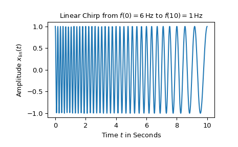
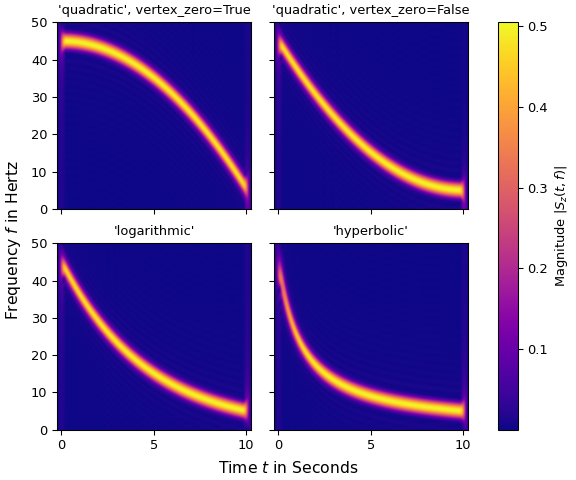
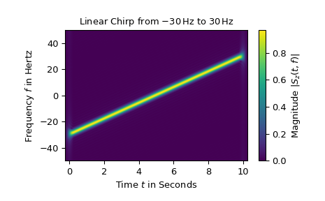

chirp#
- scipy.signal.chirp(t, f0, t1, f1, method='linear', phi=0, vertex_zero=True, *, complex=False)[source]#
Frequency-swept cosine generator.
In the following, ‘Hz’ should be interpreted as ‘cycles per unit’; there is no requirement here that the unit is one second. The important distinction is that the units of rotation are cycles, not radians. Likewise, t could be a measurement of space instead of time.
- Parameters:
- tarray_like
Times at which to evaluate the waveform.
- f0float
Frequency (e.g. Hz) at time t=0.
- t1float
Time at which f1 is specified.
- f1float
Frequency (e.g. Hz) of the waveform at time t1.
- method{‘linear’, ‘quadratic’, ‘logarithmic’, ‘hyperbolic’}, optional
Kind of frequency sweep. If not given, linear is assumed. See Notes below for more details.
- phifloat, optional
Phase offset, in degrees. Default is 0.
- vertex_zerobool, optional
This parameter is only used when method is ‘quadratic’. It determines whether the vertex of the parabola that is the graph of the frequency is at t=0 or t=t1.
- complexbool, optional
This parameter creates a complex-valued analytic signal instead of a real-valued signal. It allows the use of complex baseband (in communications domain). Default is False.
Added in version 1.15.0.
- Returns:
- yndarray
A numpy array containing the signal evaluated at t with the requested time-varying frequency. More precisely, the function returns
exp(1j*phase + 1j*(pi/180)*phi) if complex else cos(phase + (pi/180)*phi)where phase is the integral (from 0 to t) of2*pi*f(t). The instantaneous frequencyf(t)is defined below.
See also
Notes
There are four possible options for the parameter method, which have a (long) standard form and some allowed abbreviations. The formulas for the instantaneous frequency \(f(t)\) of the generated signal are as follows:
Parameter method in
('linear', 'lin', 'li'):\[f(t) = f_0 + \beta\, t \quad\text{with}\quad \beta = \frac{f_1 - f_0}{t_1}\]Frequency \(f(t)\) varies linearly over time with a constant rate \(\beta\).
Parameter method in
('quadratic', 'quad', 'q'):\[\begin{split}f(t) = \begin{cases} f_0 + \beta\, t^2 & \text{if vertex_zero is True,}\\ f_1 + \beta\, (t_1 - t)^2 & \text{otherwise,} \end{cases} \quad\text{with}\quad \beta = \frac{f_1 - f_0}{t_1^2}\end{split}\]The graph of the frequency f(t) is a parabola through \((0, f_0)\) and \((t_1, f_1)\). By default, the vertex of the parabola is at \((0, f_0)\). If vertex_zero is
False, then the vertex is at \((t_1, f_1)\). To use a more general quadratic function, or an arbitrary polynomial, use the functionscipy.signal.sweep_poly.Parameter method in
('logarithmic', 'log', 'lo'):\[f(t) = f_0 \left(\frac{f_1}{f_0}\right)^{t/t_1}\]\(f_0\) and \(f_1\) must be nonzero and have the same sign. This signal is also known as a geometric or exponential chirp.
Parameter method in
('hyperbolic', 'hyp'):\[f(t) = \frac{\alpha}{\beta\, t + \gamma} \quad\text{with}\quad \alpha = f_0 f_1 t_1, \ \beta = f_0 - f_1, \ \gamma = f_1 t_1\]\(f_0\) and \(f_1\) must be nonzero.
Array API Standard Support
chirphas support for Python Array API Standard compatible backends in addition to NumPy. The following combinations of backend and device (or other capability) are supported.Library
CPU
GPU
NumPy
✅
n/a
CuPy
n/a
✅
PyTorch
✅
✅
JAX
✅
✅
Dask
✅
n/a
CuPy delegates to
cupyx.scipy.signal.chirp, which does not supportcomplex=True.See Support for the array API standard for more information.
Examples
For the first example, a linear chirp ranging from 6 Hz to 1 Hz over 10 seconds is plotted:
>>> import numpy as np >>> from matplotlib.pyplot import tight_layout >>> from scipy.signal import chirp, square, ShortTimeFFT >>> from scipy.signal.windows import gaussian >>> import matplotlib.pyplot as plt ... >>> N, T = 1000, 0.01 # number of samples and sampling interval for 10 s signal >>> t = np.arange(N) * T # timestamps ... >>> x_lin = chirp(t, f0=6, f1=1, t1=10, method='linear') ... >>> fg0, ax0 = plt.subplots() >>> ax0.set_title(r"Linear Chirp from $f(0)=6\,$Hz to $f(10)=1\,$Hz") >>> ax0.set(xlabel="Time $t$ in Seconds", ylabel=r"Amplitude $x_\text{lin}(t)$") >>> ax0.plot(t, x_lin) >>> plt.show()

The following four plots each show the short-time Fourier transform of a chirp ranging from 45 Hz to 5 Hz with different values for the parameter method (and vertex_zero):
>>> x_qu0 = chirp(t, f0=45, f1=5, t1=N*T, method='quadratic', vertex_zero=True) >>> x_qu1 = chirp(t, f0=45, f1=5, t1=N*T, method='quadratic', vertex_zero=False) >>> x_log = chirp(t, f0=45, f1=5, t1=N*T, method='logarithmic') >>> x_hyp = chirp(t, f0=45, f1=5, t1=N*T, method='hyperbolic') ... >>> win = gaussian(50, std=12, sym=True) >>> SFT = ShortTimeFFT(win, hop=2, fs=1/T, mfft=800, scale_to='magnitude') >>> ts = ("'quadratic', vertex_zero=True", "'quadratic', vertex_zero=False", ... "'logarithmic'", "'hyperbolic'") >>> fg1, ax1s = plt.subplots(2, 2, sharex='all', sharey='all', ... figsize=(6, 5), layout="constrained") >>> for x_, ax_, t_ in zip([x_qu0, x_qu1, x_log, x_hyp], ax1s.ravel(), ts): ... aSx = abs(SFT.stft(x_)) ... im_ = ax_.imshow(aSx, origin='lower', aspect='auto', extent=SFT.extent(N), ... cmap='plasma') ... ax_.set_title(t_) ... if t_ == "'hyperbolic'": ... fg1.colorbar(im_, ax=ax1s, label='Magnitude $|S_z(t,f)|$') >>> _ = fg1.supxlabel("Time $t$ in Seconds") # `_ =` is needed to pass doctests >>> _ = fg1.supylabel("Frequency $f$ in Hertz") >>> plt.show()

Finally, the short-time Fourier transform of a complex-valued linear chirp ranging from -30 Hz to 30 Hz is depicted:
>>> z_lin = chirp(t, f0=-30, f1=30, t1=N*T, method="linear", complex=True) >>> SFT.fft_mode = 'centered' # needed to work with complex signals >>> aSz = abs(SFT.stft(z_lin)) ... >>> fg2, ax2 = plt.subplots() >>> ax2.set_title(r"Linear Chirp from $-30\,$Hz to $30\,$Hz") >>> ax2.set(xlabel="Time $t$ in Seconds", ylabel="Frequency $f$ in Hertz") >>> im2 = ax2.imshow(aSz, origin='lower', aspect='auto', ... extent=SFT.extent(N), cmap='viridis') >>> fg2.colorbar(im2, label='Magnitude $|S_z(t,f)|$') >>> plt.show()

Note that using negative frequencies makes only sense with complex-valued signals. Furthermore, the magnitude of the complex exponential function is one whereas the magnitude of the real-valued cosine function is only 1/2.